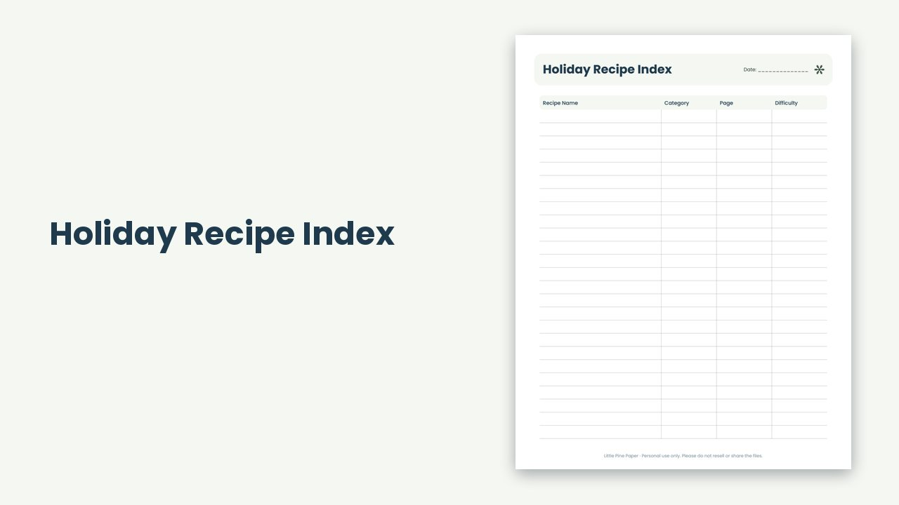
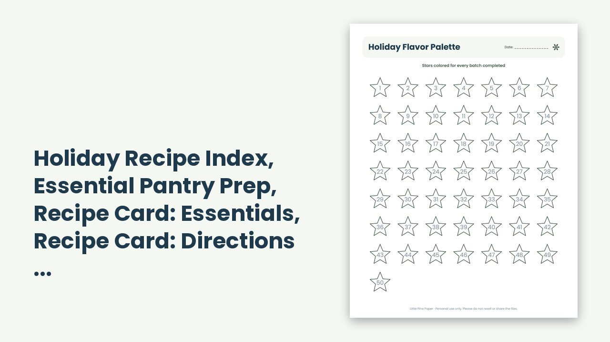

Printable Holiday Recipe Cards and Baking Log Template Collection



Keep your festive kitchen organized with this comprehensive collection of holiday recipe cards and baking logs designed for your seasonal kitchen.
What's inside: This 16-page PDF set includes layouts for every step of the baking process. You will receive a Holiday Recipe Index, Essential Pantry Prep, Recipe Cards with sections for ingredients and directions, and a Holiday Baking Schedule. The set also features a Cookie Exchange Log, Recipe Testing Lab, Batch Baking Progress, and a Bake & Gift List. For documenting memories, we have included pages for Baking Traditions and Kitchen Notes & Sketches, along with a Measurement Conversion chart and Holiday Grocery Trip list.
How to use: Download your files and print the specific pages you need on your home printer. Use the logs to track oven settings and star ratings for your creations, or organize your recipe collection for a cookie exchange. These portrait-oriented pages come in both US Letter and A4 sizes.
Good to know: This is a digital download only; no physical item will be shipped. These files are for personal or classroom use and may not be resold or redistributed. You can print as many copies as needed for your own holiday planning.